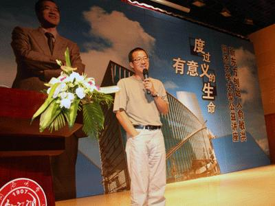

不要以你的现状来判断你的未来
不要以你的现状来判断你的未来
相貌与成功的关系—俞敏洪6月2号在同济大学的演讲
同济大学的同学们大家晚上好！>>>
电脑每个键的用处
F1帮助 F2改名 F3搜索 F4地址 F5刷新 F6切换 F10菜单
CTRL+A全选 CTRL+C复制 CTRL+X剪切 CTRL+V粘贴
CTRL+Z撤消 CTRL+O打开
SHIFT+DELETE永久删除
DELETE删除>>>
那些该离去的终究留不住，也许失去是另一种得到！
引导语：人生是个圆，有的人走了一辈子也没有走出命运画出的圆圈。他就是不知道，圆上的每一个点都有一条腾飞的切线。所以，人生要经得起考验和磨练。

1、没有人有耐心听你讲完自己的故事，因为每个人都有自己的话要说；没有人喜欢听你抱怨生活，因为每个人都有自己的苦痛；世人多半寂寞，这世界愿意倾听、习惯沉默的人，难得几个。我再也不想对别人提起自己的过往，那些挣扎在梦魇中的寂寞、荒芜，还是交给时间，慢慢淡漠。